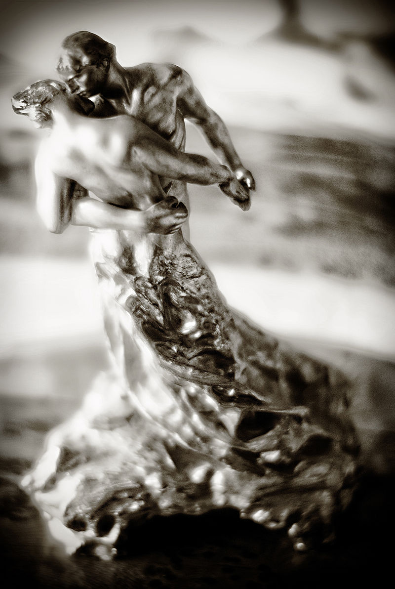

June 4th 2020, 8:44:16 pm EDT

Listen
Don't take shortcuts,
all shortcuts end abruptly.
You can't pretend,
what you pretend, can't ever become real.
A life without Authenticity,
will forever feel like chaos.
You have no choice, but to Rise,
to Emerge, in Majestic Authenticity.
To build and reinforce your Content of Character,
to pursue Wisdom and Excellence.
To Be You.
To Feel Meaning.
Growing Up has always been a Great Challenge.
it has never been easy.
Growing Up is the first, and foremost, and most important,
and should life crumble, you will rebuild.
Don't worry, you are not wasting time Growing Up,
it matters not how you step forward, just that you do.
The result is the same, Content of Character, Strength,
Joy, Love, Happiness, Adventure, and Foolishness,
to name a few.
Not only is this the only way to live,
but it is also the only way for the World to Learn.
Humans cannot be led outside in,
they must be taught to lead, inside out.
The recipe for your own Growing Up,
is also the recipe for a Wise World.
June 3rd 2020, 11:07:48 pm EDT

Listen
Your light must be a true reflection of Yourself,
so that You may be truly seen and understood.
Do not hide, emulate, simulate, pretend, or serve;
that only disrupts Your light and path.
You are already special enough,
You are a Child of The Universe.
You are meant to become a Great Being through your own journey,
You are meant to bring enlightenment, unseen before.
Please, take good care of Yourself,
You are responsible for Your delicate mind and body.
And take care of Your Elder Self,
so that You may have no regrets come Your Golden Age.
Your Existence, requires that You walk Your own path,
that You lead Your own way.
But the path is not a straight line,
it is more of a flat spiral, you are never far from yourself.
There is so much of You in Your Elder Self,
and there is so much of Your Elder self in You already.
Be good to Her, love Yourself,
be mighty, and authentic.
Never let Yourself down, always rise,
and do not slow down.
Step after step jog mightily forward,
decorate Your Beautiful Journey with Wisdom and Triumph.
May Your elder self, perch upon a porch,
and muse and wonder...
"What a strange Star Child I was,
and how impossibly long my Beautiful Life"
And may You bring Her memories,
of every year in each decade.
Of things You noticed for the first time,
and things You never knew could happen.
And things, that other people never expected of You,
like that year, that you wore a bushy tail - because it made you feel beautiful.
Love Your older self,
make Her smile and wonder.
Make Her love the Younger You,
but fill in all the years completely.
Make sure, that not only is there nothing new to add,
but also that there is nowhere anything could fit.
June 2nd 2020, 7:00:01 pm EDT

Listen
We have an aversion to being trapped,
because of an innate sense of distance that we must travel.
The distance begins the moment we gain self-awareness,
the end, does not matter - only the distance does.
You are in charge of the direction of your journey,
if you let it lead you, it will pull you in all directions.
In letting the life dictate,
you will become divided.
In doing the dictating,
you, will set the aim.
If you let yourself become a leader,
you will arrive at a singe destination.
In one way, or another,
you will, without a doubt, arrive.
The Universe, cannot stop what you start,
the Universe will gently let your existence expand.
It is tough to be led and expect clarity,
there will be too much noise from following.
But in leading, there is no noise,
the path is pure, as pure as your imagination.
The steps along your journey,
extract a price.
The Universe smiles,
as you pay your way.
You start as a child,
and the first step is very difficult.
And the second, and fourth grade,
and sixth semester, and eighth book.
Your singular ripple,
unlike everything else out in the Universe;
Has a breathtaking order dictated from within,
not pushed by the chaos, but dictated by your mind.
Can you imagine how boring chaos becomes,
and can you see how beautiful your perfect ripple.
The edge of chaos that surrounds your beauty,
is pushed out by a kind, of Youniverse.
Let me be clear,
you are not a river, nor a snowball, or a butterfly's wing.
There is enough of those, already,
nothing worthy of you, needs you to follow.
It is a Law of The Universe,
that no Human should follow.
A river should flows surely to the sea,
but a Human, is meant to Lead.
It is a simple but forgotten lesson,
it is meant to sit next to; Love of Wisdom.
That no human should serve nor follow,
non should practice resignation.
If you feel weak,
it is because you resigned for too long.
And you will have to start in the beginning,
and your first step will be very difficult.
June 1st 2020, 9:51:09 pm EDT

Listen
Your superpowers are not rooted in your wishes,
as only very few wishes come true.
Universe has already established its rule and order,
we are latecomers to the Symphony Orchestra.
Instead, seek your superpowers in what you already own,
in the things that have already sprung.
In the incredible adaptability of your body,
in your raw, unleashed consciousness.
If you are good to your body, you body will flourish,
it is a biological system, not that different from a flower.
If you are good to your mind, it will expand,
it is a navigational system with landmarks.
Your mind is especially beautiful,
it has a large memory capacity.
You can't recall letters on a particular page in a book,
but you can recall the walls in your home, the streets in your city.
Your mind does not differentiate between navigating a road,
or a vast galaxy of star constellations.
Your mind can encode interconnected knowledge,
so as long as it is marked with pictures and relative locations on a well connected tree.
It is foolish to think to a particular page,
and feel ordinary for not being able to recall all the words.
It is foolish to try to ride a boat,
on a road.
Do not seek to invent your superpowers,
instead, recognize the ones you already have - and expand them.
May 31st 2020, 10:31:13 pm EDT

Listen
Your Lifeline - the cumulative choices you made that affected your entire life,
must be precisely aligned to match who you are, so that you may learn.
This is not an easy thing,
but there can be no other.
We live in a world under constant erosion from Poverty,
Authenticity is a difficult path.
Stay safe, love yourself,
but you must also stand your ground.
What life is pressing you into,
and the path that you must be on for your wisdom sake;
Are likely to be some distance apart,
this is the tragedy of our modern age.
The complexity of life, will be pushing you away,
from the line you need to walk to learn and become wise.
The path that life is trying to press you into,
is almost truly random, it comes out of misery and chance.
The path mere life dictates includes lies and manipulations that you can't see at first,
people will use your innocence against you, to make their lives simpler.
When you follow, you fall into cogs of ravenous emergent machinery,
and this machinery exists, because, followers gather.
My Dear Friends, if you must,
then know that there is but one you serve.
The Wisest You, The Best You, The Most Brilliant You,
at the Greatest Age of Your Life, Your Golden Age of Wisdom.
The path that mere life dictates, is a melody out of tune,
you become a piano key, and life will keep pushing, non-stop.
But the path you dictate, is very unusual in deed,
because each step you take, adds to the previous.
And with only a few steps,
you are stepping higher, you are already building, up.
That is the same "up", that "Grow Up" uses,
your own step, followed by you own step, forward and up.
If you dare to throw caution into the wind,
it will bring you wisdom - you'll see.
But other than that, like a cat,
walk cautiously onward.
When things start adding up,
you will surpass your younger self.
And now, where you used to think: "And where am I actually going?",
you will see a road ahead, by subtle analogy to the road you've already traveled.
Where once you toyed with the question of "Who am I?",
you will now, see you.
You'll make little mistakes, and that is OK,
because you will have your path to fall back on.
And those mistaken tangents, will cradle you,
they will add, and refine your decision-making.
When you walk your own path,
you do not make big mistakes.
The little ones will teach about the bigger ones,
by subtle analogy.
Your own path,
is a great teacher.
So what is it like,
on that path?
I am very sorry to say, it is lonely,
but loneliness is correct.
Not until you find your other half,
will loneliness let go of you.
It is there to remind you,
that you can only make it half-way on your own.
Your own path,
is above all; clear.
There are no excuses,
nothing to sway you.
The air is crisp,
there is no smog.
Just,
a clear vision.
Even without any guarantees in life,
you will become stronger.
But, yes - no matter how beautiful you become,
Universe will do nothing to guarantee you, anything.
This,
is the Leap of Faith.
And the faith,
is in Your Greater Self.
Walk your own path, because in the first half of your life,
your own path is the only thing that can add to you.
Authenticity, is a law of the Universe,
it follows similar principles.
Walk your own path,
and expand.
The first steps are always clumsy,
I went to the museums.
A coffee shop is a bad idea,
because everyone is there.
But a museum is different,
it filters for kindness, somehow.
I went to the D.I.A
I was extremely lucky.
They were showing,
Auguste Rodin's work.
I understood it immediately, the secret of sculpture,
is to enlarge that part that holds the soul.
At the end,
they had The Waltz (possibly a large replica as it had more detail, this was some 13 years ago), that dancing couple by Camille Claudel.

I started crying,
her hand, had so much feeling in that gentle arch, there was so much touch.
That is life,
that is the path.
The path, where you cry out of beauty,
and not cry out of being lost.
And you have to create art,
art is about training yourself for success.
Learning,
by subtle analogy.
That's why you never finish,
there is no time for the art it self.
There is only time,
for learning life.
Learning by subtle analogy,
to the smaller Triumph, and Success.
Stick to a single subject,
until you fill it completely.
Now you can hang it up at the coffee shop,
but keep moving forward.
Do not Follow, My Friends,
there is nothing there to be found.
Nothing you find when you follow,
will add together to make a whole.
When it feels like you are surrounded by paths,
and there is nowhere to go, or you can't go into enough places.
That is an illusion,
all those paths are false.
Turn around,
slow down.
Go back to the last thing that moved you,
and fearlessly resume at that point.
The world may shake and shudder,
and there will be "Why?", and "How could you?", and "What is going on?".
All those cries,
are for the person that follows.
Each asking you to a different path,
and all those paths are mutually incompatible.
Do you see,
life wants you to merely be.
But you can be more,
you don't have to call it Growing Up, Courage, Authenticity or Growing Content of Character.
Call it, and appointment at D.I.A.
call it, a meeting at the UofM Museum of Natural History.
Begin keeping a Moleskine Journal,
use a pencil,
only draw what your heart sees,
and write as little as possible,
write to your older self,
explain to her why?
Find your center,
find your balance.
Lean on your Nucleus,
and push off to take your steps in your own direction.
Calm your hand,
slow your time.
There are decades ahead,
and you have to be seen.
Show yourself,
create future.
What others have, may shine,
but is not always gold they keep.
The younger we are,
the less wisdom we hold;
The less wisdom,
the more questions we should answer.
And questions combined with life,
make for a busy time in deed.
So slow down,
answer your questions - first.
All life is sacred,
all Lifelines equally matter.
But not all will arrive at their Golden Age of Wisdom,
without regrets.
So, please,
ask your older self what her regrets are.
And the higher you grow, the more you know, and which is more,
the more in harmony with your older-self, you'll be.
May 30th 2020, 6:52:41 pm EDT

Listen
Waiting for the sun to inch down,
before I go out in the town.
My legs have become like two huge potatoes,
but that's life, that's how it goes.
There are so many lovely people that notice me out there,
yesterday a cute couple, lady with fancy hair.
A couple of days ago, a gent from the gym,
slowly walking and wondering "Is that him?"
Oh yeah, that was me! I shaved my mustache,
and taught my self to dash.
Sure I run at the speed of a sickly gastropod,
but after my gym-dancing, don't even feel odd.
And before that, the ladies in the Jeep,
I didn't wave back, I am sorry, I was in the middle of a huge leap.
And then the first person to notice me in my sluggish swim,
might have been the Trainer! from the gym.
I was really tired in the middle of my early run,
muttering "I can't believe I have to run the same distance, before I am done."
And then I heard "Hi! Andre!" and I instantly regained my strength,
I could have run five times that length.
Sure, I am still learning, running tests and trails,
but my aim is one hour, to do the whole five miles.
And you know what, just after two weeks,
I run a lot faster; and I have rosy cheeks!